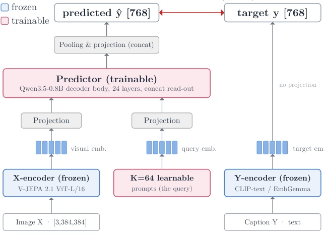
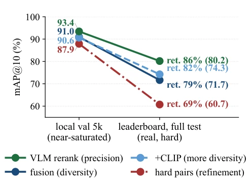

SCOUT attempts to challenge expensive fine-tuned cross-encoders using frozen encoders, focusing on "saving money and effort". Although efficiency is extremely high and inference is lightning-fast, there is still a 15-point gap from the top, indicating that frozen models still have a "critical flaw" in accuracy. The core innovation lies in transforming retrieval into embedding space prediction rather than pixel reconstruction, which is a rather bold idea. However, the geometric structure selection for the frozen text encoder is a bit of a black box, relying on alignment scores rather than training; choosing wrong means wasted effort. Most ironically, interventions that perform well on the local validation set may regress on the leaderboard; this calibration is simply a black box. Authors claim frozen models can compete, but on the leaderboard 84.25 compared to the top 99.30, the gap remains obvious, indicating that although "freezing" is good, accuracy is still the bottleneck.
研究动机Motivation
文本检索在 sim-to-real 场景下，主流是 ALBEF/X-VLM 微调 [15, 24]，但计算昂贵且推理慢。CMP 基线训练需 16 GPU 天 [23]。SCOUT 想证明冻结模型也能打，减少训练成本。现有方法依赖交叉编码器，无法作为第一级检索器，必须分阶段，这增加了系统复杂度。且合成数据到真实图像的域差距巨大，微调模型容易过拟合合成数据，泛化性存疑。作者指出 cross-encoder 无法作为第一级检索器，因为评分 N 张图需要 N 次前向传播，而双编码器只需一次缓存，效率优势明显。
Text retrieval in sim-to-real scenarios, the mainstream is ALBEF/X-VLM fine-tuning [15, 24], but computation is expensive and inference is slow. CMP baseline training requires 16 GPU-days [23]. SCOUT aims to prove frozen models can also compete, reducing training costs. Existing methods rely on cross-encoders, cannot serve as first-stage retrievers, must be phased, which increases system complexity. And the domain gap from synthetic data to real images is huge, fine-tuned models easily overfit synthetic data, generalization is questionable. Authors point out cross-encoders cannot serve as first-stage retrievers, because scoring N images requires N forward passes, while bi-encoders only need one cache, efficiency advantage is obvious.
Video encoder V-JEPA frozen, text encoder EmbeddingGemma frozen. Train a Qwen decoder as predictor, using bidirectional InfoNCE loss. Inference is bi-encoder. System level added fusion and reranking, including ExPLoRA adapted for video encoder and attribute decomposition VLM reranking. Predictor initialized from Qwen3.5-0.8B, reads patch tokens through K learnable prompts. ExPLoRA only fine-tunes partial blocks and LayerNorm, keeping feature distribution stable. InfoNCE loss includes image-to-text and text-to-image two directions, ensuring bidirectional alignment. System finally adopts retrieve-fuse-rerank architecture, fuses multiple retriever scores, then uses VLM reranking to improve accuracy.

Fig. 1: SCOUT. A frozen self-supervised video encoder (V-JEPA) produces patch tokens, and a trainable predictor with K learnable prompt tokens reads them out into the embedding space of a frozen text encoder. Training is a bidirectional InfoNCE between the predicted and the true caption embedding, and at inference the gallery is encoded once (bi-encoder).
PAB dataset. Single model 60.63 mAP@10, system 84.25. Ablation shows batch size has the biggest impact. Found local validation set and real leaderboard performance inconsistent, need to rely on decorrelation statistics. ExPLoRA and attribute decomposition reranking improved R@1. Final system fused multiple retrievers, via CombSUM fusion, VLM reranking responsible for accuracy. Fig. 3 shows intervention types differ, local validation set and leaderboard performance correlation reverses, diversity intervention has larger gain on leaderboard, while reranking optimization may regress instead.
其他图片Other Figures

Fig. 3: Local (val) against leaderboard (full-test) mAP@10 by intervention type, with each line’s retention (leaderboard over val). The dashed +CLIP line starts below fusion on val yet lands above it on the leaderboard, the sign flip discussed in the text.